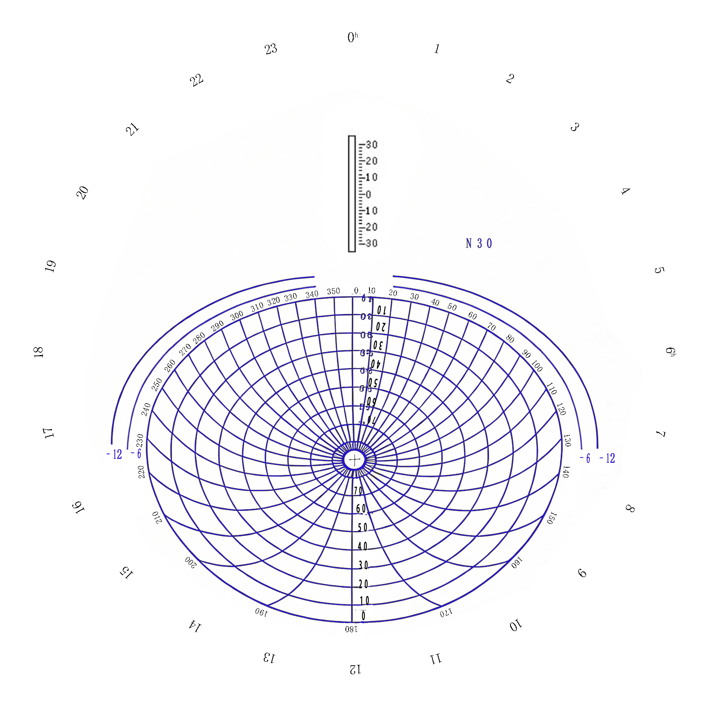

本索星卡模拟器为本人业余制作，用于认星和航海测天定位练习。
一、界面使用说明
1. 面板旋转角度：输入角度值（或使用键盘 ←→ 键）旋转面板到任意位置。
2. 方位归零：面板返回初始角度（0°）。
3. 选择底板 / 面板：点击按钮导入索星卡底板和面板图片。
（1）电脑：图片与 HTML 放同一文件夹，打开即显示；
（2）手机：先将图片保存到相册，再点击导入。
4. 高级设置：用于调整星体位置，平时无需打开。
已内置 76 颗航用恒星 + 太阳 + 4 颗行星 + 月亮。
5. 测者纬度 / 经度：纬度（北 +、南 −），经度（东 +、西 −），输入后点击【应用】。
默认：纬度 30°N，经度 120°E。
6. 观测时间：填写区时（当地手表 / 手机时间）。
7. 时区号：根据输入的经度自动计算，一般无需手动修改。
8. 执行：输入经纬度和日期时间后，点击【执行】按钮，面板自动转到该时刻的星空。
9. 天体显示选项：
（1）🟡 底板北天星：显示程序绘制的所有星体，平时无需勾选；
（2）🔴 面板航用星：仅显示测者可见的航用星体，建议勾选；
（3）☀ 太阳 + 行星：显示太阳和四颗行星；
（4）🌙 月亮：显示月亮；
（5）🌍 显示地平线下：用于调整星体位置时参考，平时无需勾选。
二、主界面说明
1. 底板：外圈日期、中圈时间（活动）、内圈方位。默认日期为 3 月 21 日 0 点。
2. 面板：
（1）默认采用 30°N（根据输入纬度自动调整）；
（2）蓝色椭圆：中心为天顶，外圈为测者地平圈，网格为高度和方位；
（3）地平圈外的四条弧段分别为 −6° ~ −12° 的晨昏线；
（4）椭圆内的星体为当时可见星体，点击可显示星名、计算高度和方位。
三、方位角 / 高度角显示栏
1. 方位角 Az / 高度角 Alt：显示相对于测者天顶（椭圆中心）的天体高度和方位，主要用于认星。
2. 【锁定】方位 Az / Alt：显示相对于测者位置（经纬度）的天体计算高度和方位，主要用于航海测星定位。
四、误差说明
1. 索星卡在制作过程中可能存在误差；
2. 底板与面板投影方法不同，会存在视觉误差，尤其在星体接近地平圈时视觉误差会放大，但天体的计算高度和方位误差很小，不影响定位精度。
